This is to certify that the project report entitled
submitted by
Abhijay Mishra (24BCE2016) and Naman Gupta (24BCE0768)
of the B.Tech. programme in Computer Science and Engineering is a bona fide record of work carried out under the supervision of the undersigned. The work has been completed in accordance with the requirements of the School of Computer Science and Engineering, Vellore Institute of Technology.
Place: Vellore Date: _______________
We take this opportunity to express our sincere gratitude to the School of Computer Science and Engineering, Vellore Institute of Technology, for providing the academic environment and laboratory facilities that made this project possible. We are deeply thankful to our faculty guide for patient mentorship, rigorous reviews, and for encouraging us to treat MongoDB as a first-class design concern rather than a mere persistence layer.
We thank the Department of Computer Science for the DBMS course framework that shaped the fourteen functionalities documented herein—schema design, indexing, aggregation, text search, and GridFS. The emphasis on demonstrating each capability in a working full-stack system guided every implementation decision.
We also acknowledge VIT’s computing infrastructure and the collaborative culture of our peer group. Working as a two-member team required shared ownership of the React interface and the Express–Mongoose API; that partnership improved both code quality and this report. Any remaining shortcomings are our own.
Abhijay Mishra · Naman Gupta
B.Tech. Computer Science and Engineering · VIT Vellore
Students often manage job applications manually through spreadsheets and scattered notes, making tracking interviews, offers, and deadlines inefficient.
A MERN-based Job Application Tracker powered by MongoDB that centralizes application management through a modern web interface.
A scalable and user-friendly application that demonstrates practical implementation of MongoDB NoSQL concepts alongside full-stack development.
Fourteen core functionalities—seven user-facing React capabilities and seven MongoDB/NoSQL capabilities—are specified with source excerpts and screenshots from the running system.
Pipeline at a glance
Conversion & volume
Status stages
3 / 7 / 14 day windows
Weighted $text index
Resumes in MongoDB
Metrics in the database
Per-user ownership
Section numbering follows the fourteen demonstrated functionalities. Figure numbers are of the form Figure X.Y, where X is the functionality number.
The tracker is implemented entirely on the MERN stack so that one language—JavaScript—covers client, server, and data-access logic. MongoDB is selected for semi-structured application records that evolve (notes, recruiter fields, optional files) without rigid join-heavy schemas.
Interactive frontend: dashboard, forms, pipeline board, analytics charts, and authenticated routing via a single-page application.
JavaScript runtime for the API process, tying Express, Mongoose, JSON Web Tokens, and GridFS streams together.
REST framework for routing, CORS, JSON parsing, authentication middleware, and multipart file handlers.
Document database storing users and applications; aggregation, text indexes, and GridFS all run natively in the engine.
ODM providing schemas, validation, population-ready ObjectId references, and index declarations that map 1:1 to MongoDB.
Data visualization on the Analytics page. Charts consume API aggregates; they do not compute business metrics in the browser.
Binary storage for resumes and cover letters inside the same MongoDB instance, linked by file ObjectIds on each application.
Bearer tokens identify the user; every query is additionally scoped with userId so records cannot leak across accounts.
A request originates in the browser, is authorized at the Express layer, is translated by Mongoose into MongoDB operations, and—when files are involved—streams through a GridFS bucket named documents.
Indexed fields: userId; compound { userId, status }, { userId, appliedDate: -1 }, { userId, interviewDate }; text index on company, role, notes, recruiterName.
Purpose — Provides a unified overview of job applications, interviews, offers, and conversion metrics.
The dashboard summarizes the entire application pipeline in one screen — total applications, interview conversion rate, offer count, and interviews due in the next 7 days. It loads analytics, pipeline, and upcoming-interview data in parallel on mount, so the user gets a single at-a-glance view instead of checking spreadsheets or tabs.
useEffect(() => {
Promise.all([
api.get('/analytics'),
api.get('/applications/pipeline'),
api.get('/applications/upcoming?days=7'),
]).then(([a, p, u]) => { setAnalytics(a.data); setPipeline(p.data); });
}, []);
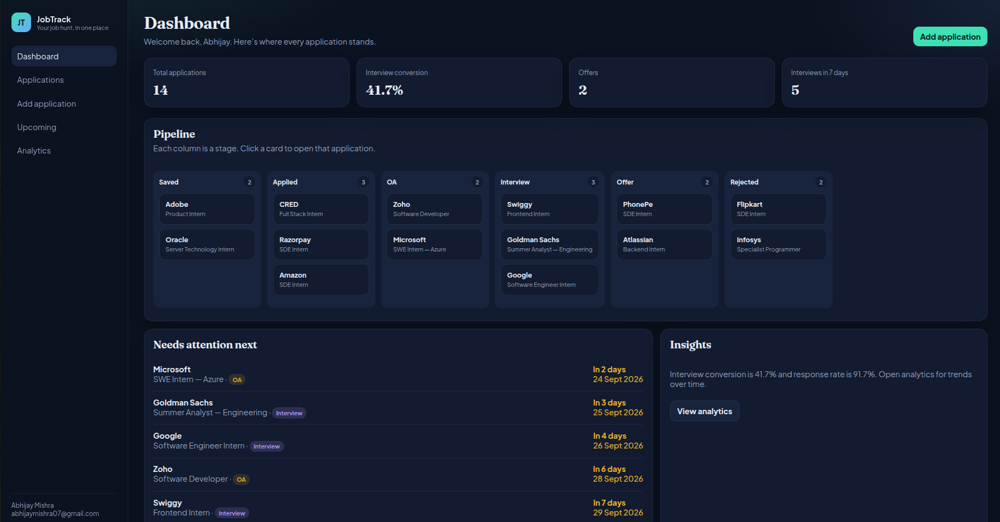
Figure 1.1 – Dashboard displaying application statistics and pipeline overview.
Purpose — Capture a new application in seconds with only company and role required.
A single React form lets the user add a new application in seconds, with only Company and Role marked required. On submit it posts the payload to the API and immediately navigates to the newly created application, keeping data entry fast and low-friction.
async function onSubmit(e) {
e.preventDefault();
const payload = { ...form, salary: form.salary === "" ? null : Number(form.salary) };
const { data } = await api.post('/applications', payload);
navigate(`/applications/${data.application._id}`);
}
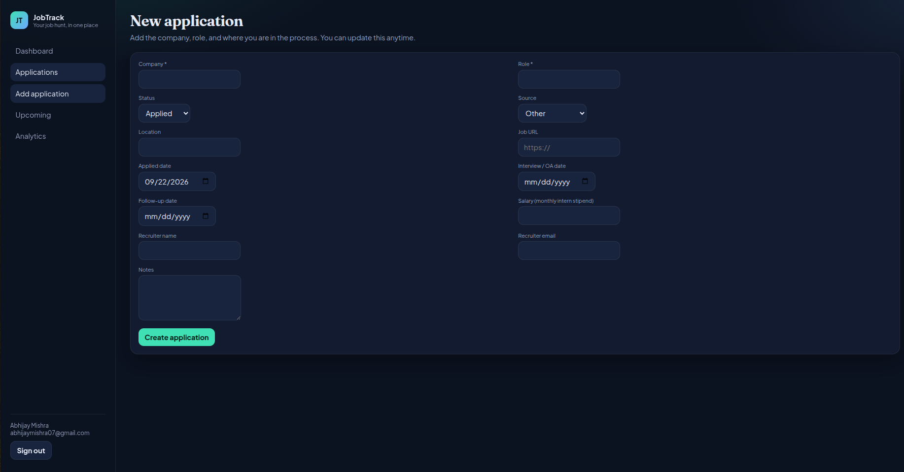
Figure 2.1 – New application form used for low-friction data entry.
Purpose — Move an application across Saved, Applied, OA, Interview, Offer, and Rejected in one control.
A dropdown on the application detail page lets the user move an application across pipeline stages (Applied, OA, Interview, Offer, Rejected) with a single selection. Changing the value fires a PATCH request and updates the UI with the server's response, keeping the pipeline state in sync. The implemented status enum also includes Saved for roles that are bookmarked before apply.
async function changeStatus(status) {
const { data } = await api.patch(`/applications/${id}`, { status });
setApp(data.application);
}
// <select value={app.status} onChange={(e) => changeStatus(e.target.value)}>
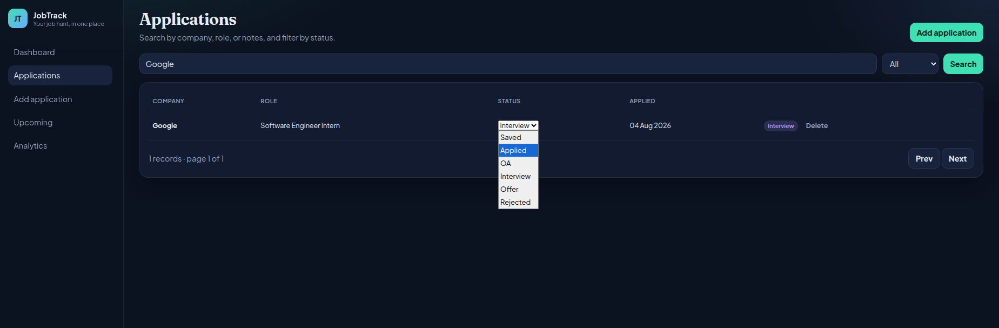
Figure 3.1 – Status dropdown on the applications board, changing pipeline stage.
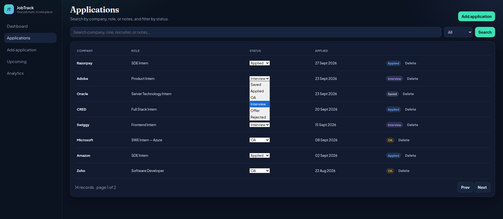
Figure 3.2 – Pipeline board with inline status updates across many records.
Purpose — Visualize interview conversion, offer conversion, and monthly volume without computing in the browser.
The Analytics page renders MongoDB-computed metrics using Recharts: a bar chart of status distribution and a line chart of monthly application volume. The UI performs no calculation itself — it only visualizes the aggregation results returned by the API, keeping charts and business logic decoupled.
<BarChart data={statusDistribution}>
<XAxis dataKey="status" /><YAxis allowDecimals={false} />
<Bar dataKey="count" radius={[8, 8, 0, 0]}>
{statusDistribution.map((e) => <Cell key={e.status} fill={COLORS[e.status]} />)}
</Bar>
</BarChart>
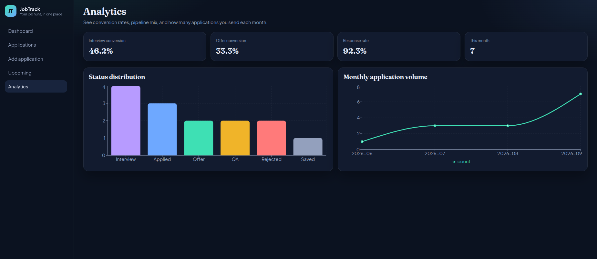
Figure 4.1 – Analytics page with conversion cards, status-distribution bar chart, and monthly-volume line chart.
$group and $sum on the server. React remains a rendering layer, which keeps metric definitions consistent for any future client (mobile or export).Purpose — Instantly locate applications by keyword and pipeline stage, with pagination.
A search bar and status dropdown let the user narrow the application list by company, role, recruiter, or notes text, or by pipeline stage. Submitting the search calls the API with both the query string and the selected status, which are combined server-side into a single filtered, paginated request.
async function search(e) {
e.preventDefault();
setPage(1);
await load(1, q, status);
}
// api.get('/applications', { params: { page, limit: 8, q, status } })
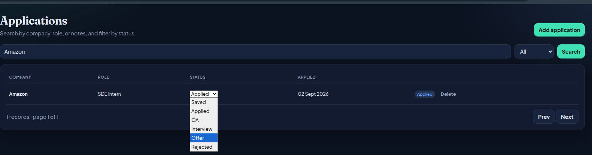
Figure 5.1 – Search and filter board with a company keyword and status menu open.
{ userId, status }. Pagination uses skip/limit so a long history never loads in one payload.Purpose — Surface OA and interview dates inside a 3-, 7-, or 14-day window.
A dedicated view highlights applications with an OA or Interview scheduled in the next N days (3, 7, or 14, selectable via toggle buttons). It re-queries the API whenever the window changes, surfacing only what the user needs to act on soon instead of the full application list.
const [days, setDays] = useState(7);
useEffect(() => {
api.get(`/applications/upcoming?days=${days}`).then((res) => setPayload(res.data));
}, [days]);
// {[3, 7, 14].map((n) => <button onClick={() => setDays(n)}>Next {n} days</button>)}
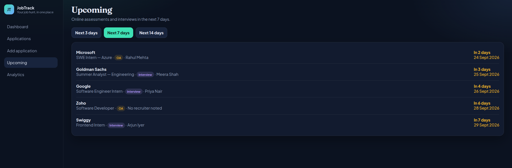
Figure 6.1 – Upcoming view with the 7-day toggle selected and dated interviews listed.
interviewDate is the operational difference between a tracker and a spreadsheet.Purpose — Attach a tailored resume and cover letter to a specific application.
Each application detail page includes a file slot for a resume and a cover letter. Selecting a file wraps it in FormData and uploads it via a multipart POST request; the user can later download it back from GridFS or remove it, all without leaving the page.
async function upload(e) {
const file = e.target.files?.[0];
const form = new FormData();
form.append('file', file);
await api.post(`/applications/${app._id}/files/${kind}`, form, {
headers: { 'Content-Type': 'multipart/form-data' } });
}
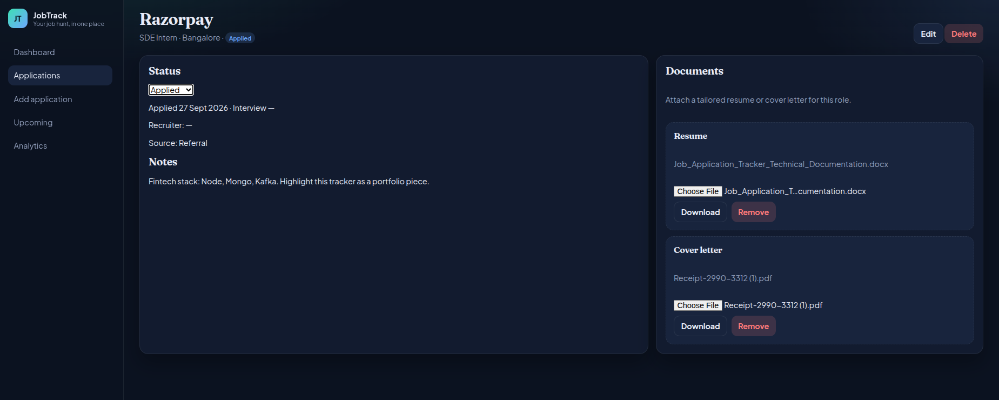
Figure 7.1 – Application detail page with file upload interface, Download, and Remove actions.
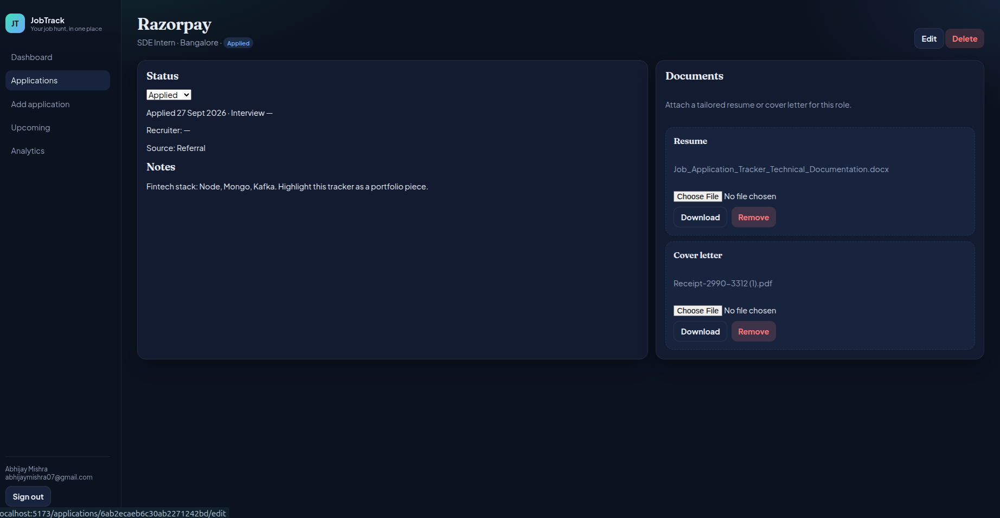
Figure 7.2 – Detail page showing Edit/Delete (CRUD) together with stored document names.
Purpose — Separate Users and Applications collections linked by ObjectId.
Each Application document stores a userId field typed as a Mongoose ObjectId that references the Users collection. This models a one-to-many relationship (one user, many applications) using MongoDB's referencing pattern instead of embedding, and the field is indexed since every query is scoped to the owning user.
userId: {
type: mongoose.Schema.Types.ObjectId,
ref: 'User',
required: [true, 'Every application must belong to a user'],
index: true,
},
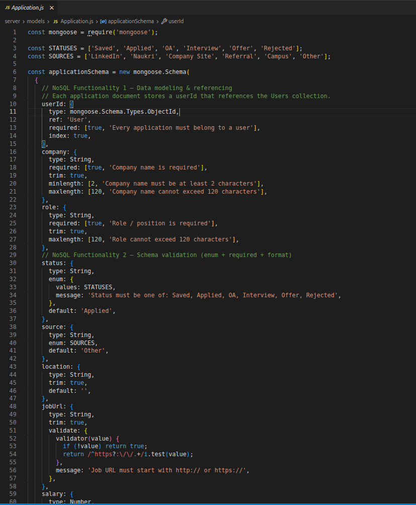
Figure 8.1 – Application.js model with the userId field referencing User.
Purpose — Reject incomplete or malformed documents before they are written.
Mongoose enforces data integrity at the schema level before anything reaches the database: required fields, string length limits, an enum restricting status to valid pipeline stages, and a custom regex validator on the job URL. Invalid writes are rejected with a descriptive ValidationError before they touch MongoDB.
status: {
type: String,
enum: { values: STATUSES, message: 'Status must be one of: ...' },
default: 'Applied',
},
jobUrl: { type: String, validate: { validator: (v) => !v || /^https?:\/\/.+/i.test(v) } },
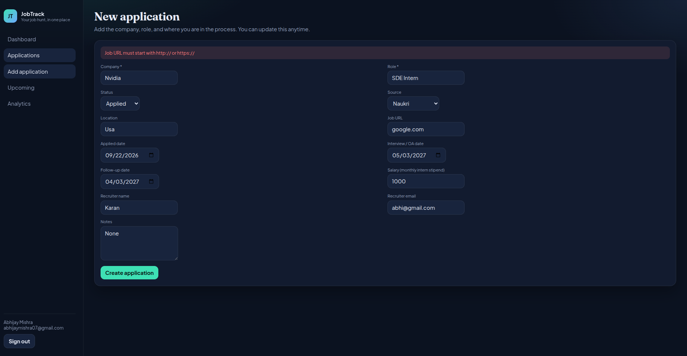
Figure 9.1 – Application form with an invalid job URL triggering the validation error banner.
runValidators: true on updates re-applies the same rules for PATCH as for create.Purpose — Create, read, update, and delete application documents for the authenticated owner only.
Express routes backed by controller functions handle the full lifecycle of an application document: create, read (single and paginated list), update, and delete. Each operation is scoped to the authenticated user via an ownerFilter, and update/delete return 404 for records the user does not own.
async function updateApplication(req, res) {
const application = await Application.findOneAndUpdate(
{ _id: req.params.id, ...ownerFilter(req.user._id) },
req.body,
{ new: true, runValidators: true }
);
}
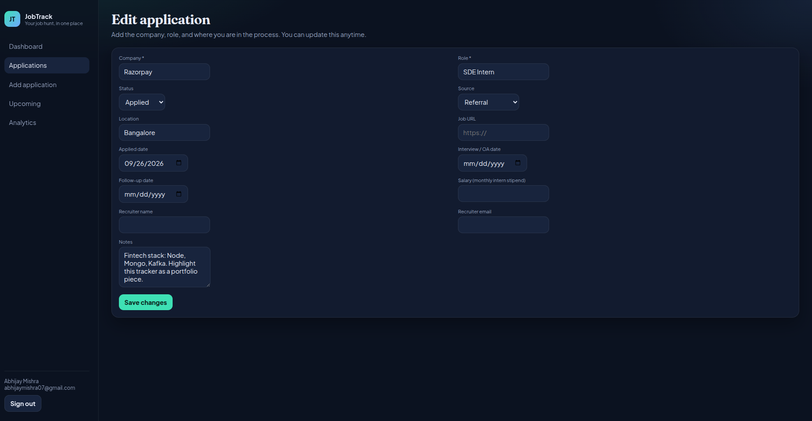
Figure 10.1 – Edit form representing Update in the CRUD cycle (Create is the new-application form; Delete is on the detail header).
Purpose — Keep status filters, date sorts, and upcoming-interview lookups fast as volume grows.
Compound indexes on { userId, status } and { userId, appliedDate } speed up the two most common query patterns — filtering the pipeline by stage and sorting the list by application date — without scanning every document a user owns. A separate index supports fast lookups of upcoming interviews by date.
applicationSchema.index({ userId: 1, status: 1 });
applicationSchema.index({ userId: 1, appliedDate: -1 });
applicationSchema.index({ userId: 1, interviewDate: 1 });
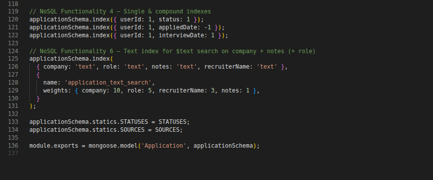
Figure 11.1 – Compound and text index declarations in Application.js (verified against the live collection).
Purpose — Compute dashboard analytics inside MongoDB with $match, $group, and $count.
Dashboard and analytics metrics are computed entirely inside MongoDB using an aggregation pipeline — $match scopes results to the current user, $group buckets applications by status or month, and further stages compute derived fields like interview and offer conversion rates. No metric is calculated in Node after a full document scan.
Application.aggregate([
{ $match: { userId } },
{ $group: { _id: '$status', count: { $sum: 1 } } },
{ $sort: { count: -1 } },
{ $project: { _id: 0, status: '$_id', count: 1 } },
]);
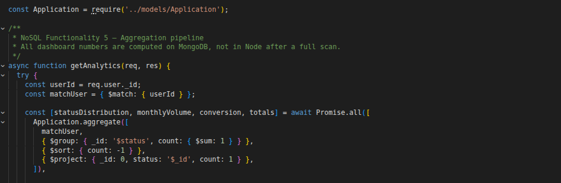
Figure 12.1 – Analytics controller executing $match / $group on the applications collection.
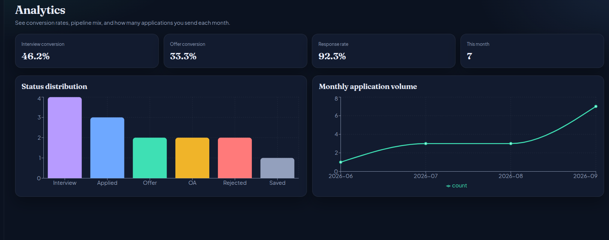
Figure 12.2 – Charts bound to the aggregation result (status counts and monthly volume).
Purpose — Rank keyword matches across company, role, recruiter, and notes.
A weighted MongoDB text index spans the company, role, recruiter name, and notes fields, with company weighted highest. When the user searches, the query uses $text with $search and sorts by textScore, so the most relevant matches surface first without a separate search engine.
applicationSchema.index(
{ company: 'text', role: 'text', notes: 'text', recruiterName: 'text' },
{ weights: { company: 10, role: 5, recruiterName: 3, notes: 1 } }
);
// filter.$text = { $search: q.trim() };
// query = Application.find(filter, { score: { $meta: 'textScore' } });
Figure 13.1 – Search board returning a ranked match for the company keyword “Google”.
Purpose — Store resume and cover-letter binaries in MongoDB, linked to the application row.
Uploaded resumes and cover letters are streamed directly into MongoDB using GridFS rather than the local filesystem, via a GridFSBucket on the 'documents' bucket. The returned file id is stored on the Application document, and files are streamed back out (or deleted) on demand, keeping documents co-located with the data they belong to.
function uploadBuffer({ buffer, filename, contentType, metadata }) {
const bucket = getBucket();
return new Promise((resolve, reject) => {
const uploadStream = bucket.openUploadStream(filename, { contentType, metadata });
uploadStream.on('finish', () => resolve(uploadStream.id));
uploadStream.end(buffer);
});
}
Figure 14.1 – UI showing resume and cover letter linked to the Razorpay application.
A single-language path from React views through Express to MongoDB, simplifying deployment and code review.
Resumes and cover letters stream into the documents bucket and remain referenced by application ObjectIds.
Status mix, monthly volume, and conversion percentages are computed with $match, $group, $sum, and $cond.
userId+status, userId+appliedDate, and userId+interviewDate keep filters and sorts index-backed.
Create, paginated read, validated update, and delete—including GridFS cleanup—are exposed as authenticated REST routes.
A native $text index ranks company names above roles, recruiters, and free-text notes.
Although built as an academic demonstration of MongoDB, the same pipeline model appears in several professional settings.
Training and placement cells can monitor student applications, OA dates, and offer conversion by batch.
Interns juggle many short cycles; a status board and 7-day alerts reduce missed assessments.
Consultants attach role-specific CVs (GridFS) while keeping a per-consultant (userId) workspace.
Individual candidates replace spreadsheets with searchable notes, recruiter contacts, and analytics.
The same schema maps to inbound applicants if “company” is inverted to “candidate,” proving the model’s flexibility.
The project is a complete case study for DBMS labs covering indexes, aggregation, and GridFS in one codebase.
The implementation required applying lecture concepts in a running system rather than isolated queries.
SMTP or campus mail hooks for OA windows already stored as interviewDate.
Export upcoming interviews as ICS so dates appear in Google Calendar.
Extract skills from GridFS PDFs to suggest missing keywords per role.
Score tailored CVs against the job description attached as jobUrl.
Aggregate response times by company across a user’s history.
Prompt packs keyed to role and notes already captured on the application.
Shared workspaces for placement cells, with role-based access on top of userId.
Reuse the same REST API; MongoDB aggregations remain the analytics source of truth.
This report has documented a complete MERN implementation of a Job Application Tracker in which MongoDB is not an afterthought but the mechanism that makes the product work. Fourteen functionalities were specified, implemented, and evidenced: a centralized dashboard, low-friction entry, pipeline status updates, analytics visualization, search and filter, upcoming-interview alerts, and file upload on the client; and referencing, schema validation, CRUD, compound indexing, aggregation, weighted text search, and GridFS on the server.
The architecture scales with the candidate’s history because queries are user-scoped and index-backed, files travel with their parent documents, and metrics are computed in the database engine. User experience follows from that design: one workspace, one status model, and one place for resumes. Academically, the project operationalizes NoSQL concepts that are easy to describe and harder to ship—especially aggregation pipelines and GridFS—inside an authenticated full-stack application suitable for laboratory demonstration and hardcopy evaluation.
We believe the system meets the dual goal of the DBMS project: a usable tool for a real student workflow, and a clear, inspectable mapping from MongoDB features to screens a faculty member can tick against a rubric.
Abhijay Mishra (24BCE2016)
Naman Gupta (24BCE0768)
School of Computer Science and Engineering · VIT Vellore · 2026
The terminal capture below was produced against the running database instance. It lists collections, GridFS documents.files metadata (including the owning applicationId and kind), and the chunk count. Together these screenshots verify collections, GridFS storage, uploaded documents, and backend functionality.
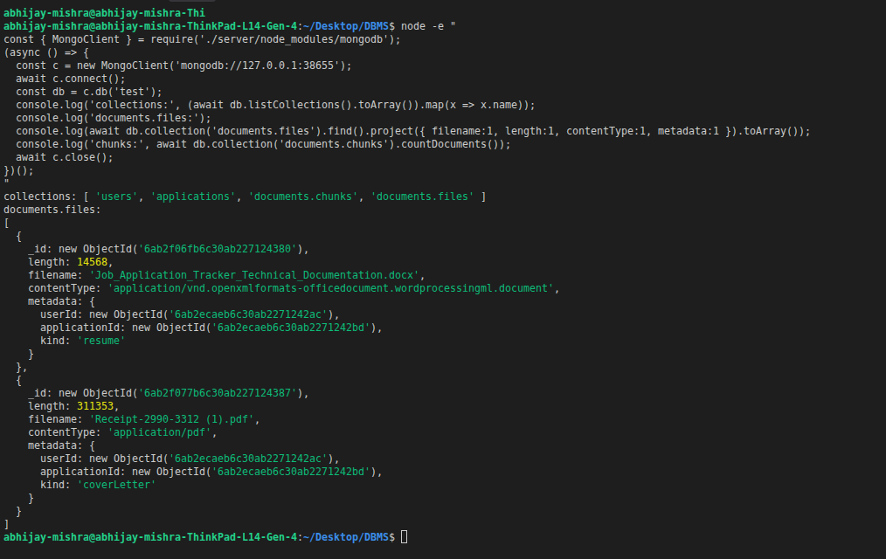
Figure A.1 – Shell listing of users, applications, documents.files, and documents.chunks after a resume and cover-letter upload.
Figure A.2 – Index definitions that MongoDB materializes as userId_1_status_1, userId_1_appliedDate_-1, userId_1_interviewDate_1, and application_text_search.
metadata.kind of resume or coverLetter and an applicationId, proving GridFS objects are not orphan blobs.